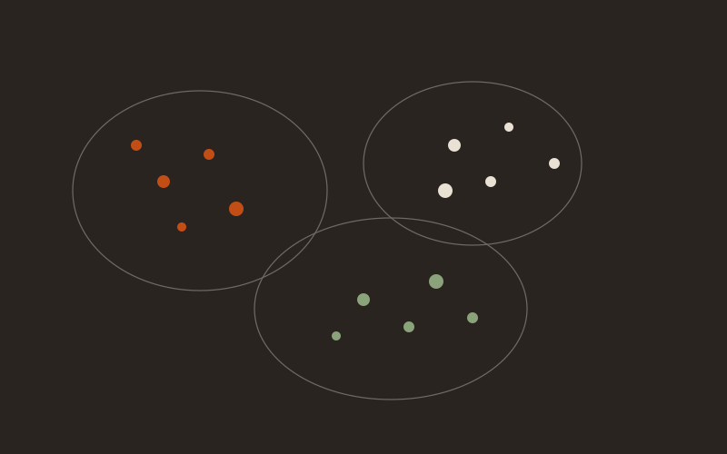

Grateful to receive the George Leland Bach Teaching Award — chosen by vote of the graduating MBA class. Many thanks to the students of the Class of 2026.
Tepper MBA Class of 2026

Assistant Teaching Professor of Business Analytics
I teach people to build, evaluate, and ship data systems — at Tepper, at Heinz, and in the field.
Tepper School of Business, Carnegie Mellon University. Selected courses at Heinz College.
My primary appointment is at Tepper, where I teach across the MBA, MS in Business Analytics, and undergraduate programs. I also teach selected courses at Heinz College. The work is applied: Python workflows, statistical reasoning, and the ethical judgment you need when a model meets a real organization.
Before returning to the faculty I led data science at Duolingo and at UPMC. That practice work — now through Hot Metal Data and gAIm Systems — is what I bring into the classroom. I build courses, advise MSBA capstones, and post student work here with permission.
Work with social and visual data without pretending the model is the decision.
How to hire, grow, and evaluate technical people without managing by vibes.
Every course has sample studio work. Named teams go up when students opt in. Replace any card by editing data/projects.json.

Cluster a retail basket dataset, name the segments in language a category manager would use, and recommend one promotion change you would actually fund.
A classification project that separates true churn risk from dormancy, with a cost-sensitive evaluation and a one-page decision brief for a product owner.
Take a real dashboard that lies by accident, document the perceptual and statistical failures, and ship a redesign that a non-analyst can use under time pressure.
A board-packet exercise: a single visual that forces a yes/no decision, with the discarded alternatives shown in an appendix.

A multimodal project I designed into the new AI methods course: text, audio, and visual signals from an earnings call, with an explicit section on what the model must not be used for.
Build a network from public social data, find communities, and write the management memo before you write the model card.
Grateful to receive the George Leland Bach Teaching Award — chosen by vote of the graduating MBA class. Many thanks to the students of the Class of 2026.
George Leland Bach Teaching Award, voted by the MBA Class of 2026.
Named an AWS Academy Educator.
Advising two MSBA capstone teams this spring.
First offering of AI Methods for Social and Visual Data, a course I built for the MBA.
Joined gAIm Systems as Senior Director of AI and Data Science.